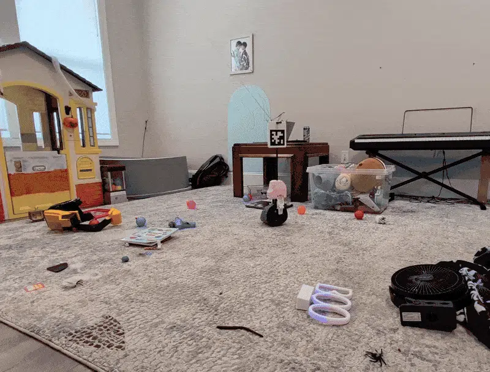

EMBODIED AI WEEKLY / 具身智能周报
具身智能前沿观察
2026年11月08日 · 全球具身智能情报精选

SIGNAL / 本周风向标
本周具身智能行业迎来资本化与基础模型的双重里程碑：Agility Robotics成功上市确立了人形机器人的二级市场估值标杆，而Liber-0等世界动作模型正依托海量人类数据加速突破具身智能泛化瓶颈。
BRIEF 01.01
Agility Robotics完成25亿美元SPAC合并，正式登陆纳斯达克
Churchill Capital XI股东正式批准了与人形机器人制造商Agility Robotics的业务合并，交易估值达25亿美元。
该交易预计将为Agility Robotics带来约4.65亿美元总资本，以支持其Digit人形机器人在工业客户中的规模化部署。
Agility Robotics在纳斯达克挂牌首日股价表现平稳，收盘上涨2%，收于每股11.49美元，成为美国及全球首家公开上市的双足纯人形机器人公司。
影响解读
Agility Robotics的上市标志着人形机器人正式从一级市场风投阶段迈入公开资本市场检验期。募集的4.65亿美元将大幅缓解其硬件迭代与规模量产的资金压力，同时也为整个具身智能赛道的估值逻辑树立了风向标。
信息来源：The Robot Report / TechCrunch Robotics
BRIEF 01.02
LiberAI发布世界动作模型Liber-0，支持零样本机器人操作
LiberAI正式推出了名为Liber-0的全新世界动作模型（World Action Model），旨在将人类日常经验扎根于机器人的物理动作执行中。
该模型基于超过220万小时的人类行为数据进行预训练，可为机器人提供跨场景的零样本（zero-shot）灵巧操作能力。
影响解读
传统机器人操作依赖昂贵且耗时的真机示教数据，Liber-0通过将数百万小时人类视频经验转化为动作先验，展现了以大规模世界动作模型解决机器人泛化能力的新路径。
信息来源：The Robot Report
BRIEF 02.01
具身仿真初创公司Physicl获1000万美元融资，攻克Sim-to-Real难题
机器人仿真技术初创公司Physicl宣布完成1000万美元融资，致力于消除数字世界与真实物理环境之间的差距（Sim-to-Real gap）。
Physicl利用原本用于线上商品营销的技术管线，打造高精度的物理与视觉渲染系统，使虚拟环境更加逼真，进而辅助机器人训练。
影响解读
数据匮乏是当前具身智能核心瓶颈之一，跨领域复用高保真渲染技术为机器人提供低成本、高真实的合成数据，正成为加速具身策略迭代的重要技术方向。
信息来源：TechCrunch Robotics
BRIEF 02.02
监管担忧数据出境与AI训练，软银54亿美元收购ABB机器人受阻
中国监管机构正式叫停了软银集团以54亿美元收购ABB机器人的大型并购交易。
监管部门的核心担忧在于交易可能导致工业与机器人运行数据转移至境外，并被用于训练海外AI模型。
影响解读
随着具身智能与大模型深度融合，机器人现场采集的物理空间与交互数据被视为国家与产业链的核心资产，跨境并购将面临更严苛的数字主权与模型安全审查。
信息来源：The Robot Report
BRIEF 03.01
波士顿动力发布Stretch Gen 2：历时两年半打造物流高可靠作业方案
波士顿动力物流机器人副总裁兼总经理Brian Donnelly宣布推出第二代仓储物流机器人Stretch Gen 2。
该版本经过长达两年半的系统性研发与验证，核心目标是为工业级客户提供高度可靠、一致且稳定的全天候装卸作业表现。
影响解读
与追求通用人形形态不同，Stretch Gen 2展现了具身物流机器人在特种构型下的极致商业化落地思路，高可靠性和抗疲劳作业是机器人从实验室走向仓储刚需的核心指标。
信息来源：The Robot Report
BRIEF 03.02
空间级线控家庭服务机器人展示杂物自主整理能力

▲ 图片来源：IEEE Spectrum Robotics
IEEE Spectrum展示了一款空间级线控家庭机器人（Room-Scale Cable-Driven Home Robot）的原型与实际工作视频。
该系统利用房间布置的缆索系统驱动末端执行器，成功在散落玩具、玩具屋和电子琴的杂乱儿童房中完成了自主抓取与收纳整理作业。
影响解读
相较于复杂的轮式或双足底盘，空间线控构型为家庭场景的轻量化收纳提供了全新的结构性思路，展示了具身智能在非传统机械构型下的落地潜力。
信息来源：IEEE Spectrum Robotics
EDITOR'S PERSPECTIVE
Agility Robotics登陆纳斯达克是人形机器人行业的标志性节点。但必须看到，首日收涨2%的平稳反应表明二级市场资金保持了审慎态度，商业化客户部署与实际交付造血能力将成为其后续估值的核心检验标准。
Liber-0模型的推出与软银收购受阻两起事件，共同揭示了具身智能深层次的竞争本质：物理世界交互数据正在成为战略资源。无论基于人类动作的经验迁移，还是工业端的数据合规，数据闭环与主权安全将在未来主导全球具身智能的技术与产业版图。
EMBODIED AI WEEKLY · 持续观察具身智能最前沿